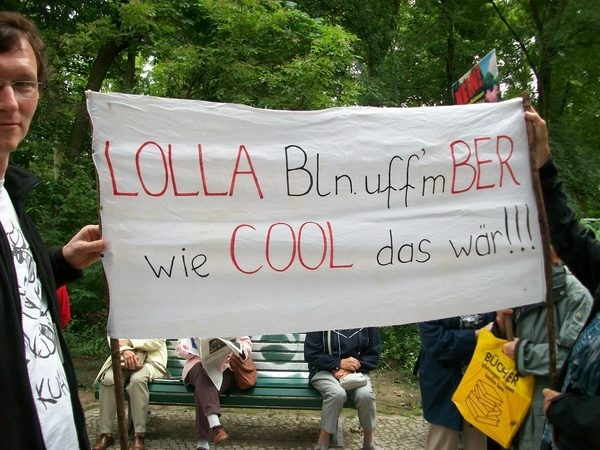
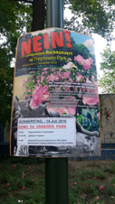
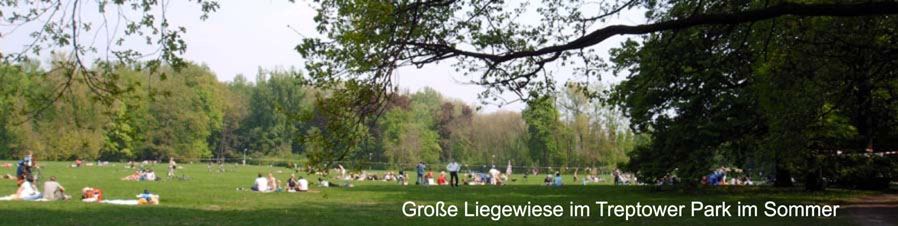

|
Treptower Park
Webseite der Bürgerinitiative post@treptowerpark.de |
Die Bürgerinitiative Treptower Park
gründete sich 2005 anlässlich der Großveranstaltung
popkick.06. Sie versuchte sich danach für die Zukunft des Gartendenkmals
und wertvollen Naherholungsgebietes einzusetzen.
Gemeinsam mit Bürgern und Ämtern wollten
wir Konzepte
gegen
die Vermüllung und Kommerzialisierung
sowie für mehr Sicherheit
und einen sorgsamen Umgang mit dem Grün entwickeln und umsetzen.
Ziel: Wir Bürger wurden nicht gefragt, trotzdem freuten wir uns über die Sanierung des Treptower Parks, wenngleich wir manche neu hergestellte aber alte Wegebeziehung aus dem 19.Jhd. dabei kritisch sehen. Schließlich gab es damals nur Pferdefuhrwerke und noch keinen Bus und Autoverkehr. Wir freuten uns, denn wir konnten uns nicht vorstellen, dass der Park wieder vermarktet wird, und das bevor die Sanierung mit 13,5 Mio Steuergeldern ( 17 Mio wenn die Platanenallee dazu gerechnet wird) überhaupt abgeschlossen ist. DAS WAR SCHON EIN SCHOCK! Nun ist die Party 2016 vorbei. UND 2017 ?? Der Veranstalter hat einen Dreijahrevertrag ( 2015/16/17 ) :: und vermutlich gab es schon längst weitere Versprechungen, um Lolla im "musikalisch unattraktiven" Berlin auf Dauer zu etablieren. Einige lesenswerte SPEKULATIONEN um den Standort 2017: vom 5. bis 7.Januar 2017: Bitte anklicken Meldung Berliner Abendblatt: Bitte anklicken Berliner Zeitung: Bitte anklicken Morgenpost: Bitte anklicken Tagesspiegel: Bitte anklicken RollingStones: Die Bürgerinitiative ist weiter wachsam! Bitte anklicken Erstes Fazit der Bürger: Bitte anklicken Sannende Zaungeschichte von Claudia H.: Bitte anklicken Eine weitere Zaumgeschichte von Brigitte T. Bitte anklicken Ode an Lolla von Karl N. Allen ein friedliches glückliches 2017 !!! Neues Wort aus der Berliner Zeitung vom 12.9.: "Mehrzweckpark" für unser Gartendenkmal. Nur von mir beobachtet: * schwaches oder kaum vorhandenes Verkehrskonzept. Staus stadteinwärts ohne Ende. Ohne Vorwarnung. * S-Bahnhof Treptow, gegen Abend kein Rauf- und Runterkommen. * Radfahrer fuhren auf dem Fahrdamm Am Treptower Park entgegengesetzt der Fahrtrichtung, weil sonst nur der Gehweg gewesen wäre, zum Abschluss der Veranstaltung rudelweise. * Der Gehweg belagert mit Zaungästen auf Decken mit Flaschen, viele Scherben NEIN zu LOLLAPALOOZA im TREPTOWER PARK! ACHTUNG: Das gab es noch nie in Berlin. Heute ist der 5. September 2016 Der Veranstalter sollte bis zum 29.8. !!! Menschen in 1.615 Wohnungen, die besonders vom Lärm betroffene sind informieren: TAT ER ABER NICHT! Die Genehmigung mit 15 Seiten Wohnungsliste können Sie hier finden: HIER Der Treptower Park ist bis 16. September ZU !!! Nicht nur zwei Tage. Menschen aus 1.615 Wohnungen (Ein-tausend-sechshundert-fünfzehn !!) haben das Recht in ein Hotel zu ziehen !!!! (Wann ist WAHL?) Das ist kein normaler Vorgang, das ...TTIP vorweg genommen ....! 90 dB sind genegmigt - mit Spitzen zu 100 dB. (90 dB = laute Maschinenhalle, immer 10 dB bedeutet Verdopplung) an zwei Tagen - 16 Stunden lang ! Wir sammeln für die Klage der am meisten Betroffenen, die aber kein Geld haben, um zu klagen. (Ungeheuerlich und gesundheitsschädlich: Pflegebedürftigkeit, Schwangerschaften, Babys, erschwerte Rettungswege ... ), Spenden-Konto der Bürgerinitiative: Sigrid Schubert, Mirko Streicher, Postbank Berlin IBAN: DE51 1001 0010 0073 7521 29 Verwendungszweck bitte: Treptower Park LEIDER - gute Anwälte kosten Geld! |
||||||||||||||
|
  |
|||||||||||||||
|

Können mehr als 6.600 Menschen (500 Unterschriften auf Listen schon übergeben)so
falsch liegen? |
|||||||||||||||
|
Der Treptower Park in Berlin Der Treptower Park ist ein geschütztes Gartendenkmal von hoher Bedeutung, als Volkspark geplant und kostbar für die Naherholung der Berliner. Mitte des 19.Jahrhunderts wurde er für die prosperierende Großstadt konzipiert und errichtet. Heute wird er, außer von Anwohnerinnen und Anwohnern, vor allem von Bürgerinnen und Bürgern der Innenstadtbereiche Neukölln, Friedrichshain-Kreuzberg, Lichtenberg und Mitte genutzt. |
|||||||||||||||
Impressum |
|